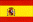
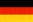

| Circuit | Date | Winner | |
| Silverstone | 10 May | #2 - J.Gene (Pacific) | |
| Pau | 8 June | #3 - E.Naspetti (Forti) | |
|  | Barcelona | 21 June | #8 - A.Montermini (Il Barone Rampante) |
| Enna-Pergusa | 12 July | #29 - L.Badoer (Crypton) | |
|  | Hockenheim | 25 July | #29 - L.Badoer (Crypton) |
| Nürburgring | 23 August | #29 - L.Badoer (Crypton) | |
| Spa-Francorchamps | 29 August | #8 - A.Montermini (Il Barone Rampante) | |
| Albacete | 13 September | #8 - A.Montermini (Il Barone Rampante) | |
| Nogaro | 11 October | #29 - L.Badoer (Crypton) | |
| Magny Cours | 18 October | #7 - JM.Gounon (DAMS) |